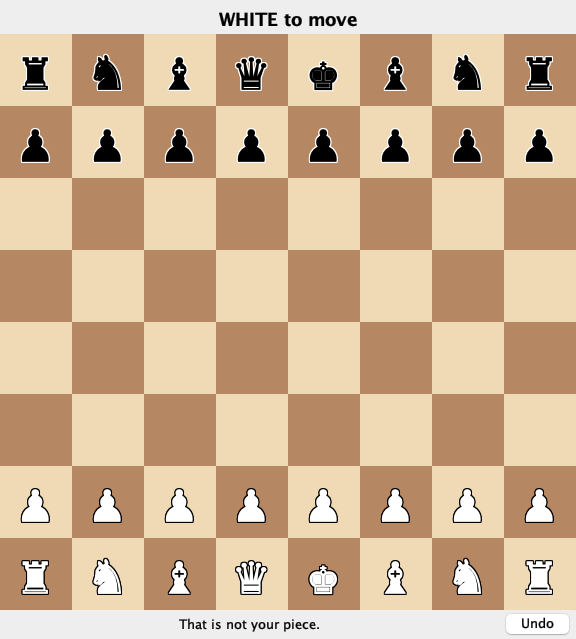

Stack traces, the debugger, logging, and reading code you did not write
San Francisco State University
Why today
In M7 you run a view you did not write.
A guess about what it does isn't worth much. Look at it running.
Debugging is an experiment
Reproduce it.
Read the evidence.
Guess, in a way you could disprove.
Test the guess. Change nothing yet.
Fix it, and keep a test.
Stack traces
Follow along
Notes §2: download Playlist.java.
File → New → Project: Java, JDK 25.
Put it in src/.
Press the green arrow beside main.
What Playlist should do
Load 40 tracks: Track 07, 3:45.
Play them, wrapping back to track 1.
Add two bonus tracks; total the minutes.
A correct run:
Now playing: Track 01
Total: 189.5 minutes
Expected: 189.5 minutes
The first run
Exception in thread "main" java.lang.IndexOutOfBoundsException: Index 40 out of bounds for length 40
at java.base/jdk.internal.util.Preconditions.outOfBounds(Preconditions.java:100)
at java.base/jdk.internal.util.Preconditions.outOfBoundsCheckIndex(Preconditions.java:106)
at java.base/jdk.internal.util.Preconditions.checkIndex(Preconditions.java:302)
at java.base/java.util.Objects.checkIndex(Objects.java:365)
at java.base/java.util.ArrayList.get(ArrayList.java:428)
at Playlist.next(Playlist.java:45)
at Playlist.main(Playlist.java:79)
Which line do you open first?
The first frame in your own code: Playlist.next, line 45.
What's in a trace
Part
Here
Tells you
Thread
"main"
which running thread failed
Exception type
IndexOutOfBoundsException
the kind of failure
Message
Index 40 out of bounds for length 40
the values involved
Frames
at …
one line per call in progress, most recent first
Line 45 is correct
Song next() {
current++;
if (current > songs.size()) {
current = 0;
}
lastPlayed = songs.get(current);
return lastPlayed;
}
A trace says where the program failed. The mistake may be earlier.
The second run
Exception in thread "main" java.lang.IllegalArgumentException: bad song line: Bonus 2, 3:5O
at Playlist.parse(Playlist.java:35)
at Playlist.load(Playlist.java:21)
at Playlist.main(Playlist.java:83)
Caused by: java.lang.NumberFormatException: For input string: "5O"
at java.base/java.lang.NumberFormatException.forInputString(NumberFormatException.java:67)
at java.base/java.lang.Integer.parseInt(Integer.java:565)
at java.base/java.lang.Integer.parseInt(Integer.java:662)
at Playlist.parse(Playlist.java:32)
... 2 more
Read the last Caused by first: closest to the problem.
The bug is in the data: a letter O.
The message says what was null
Call nowPlaying() before any next():
java.lang.NullPointerException: Cannot invoke "Playlist$Song.title()"
because "this.lastPlayed" is null
Next question: why is it null at this moment?
The debugger
The third run
Now playing: Track 01
Total: 179.0 minutes
Expected: 189.5 minutes
No exception, so no trace. To find a wrong answer, watch the values.
Stop the program and look
A breakpoint pauses the program at a line you choose.
In the gutter, the line-number margin, click line 60.
Green arrow → Debug.
It stops before running that line.
The keys
Action
macOS
Windows/Linux
Toggle a breakpoint
Cmd+F8
Ctrl+F8
Step over: run this line
F8
F8
Step into: enter the call
F7
F7
Step out: finish this method
Shift+F8
Shift+F8
Resume
Cmd+Opt+R
F9
Evaluate an expression
Opt+F8
Alt+F8
Evaluate, without changing the code
total is 10770. What is each one?
Expression
Value
total / 60
179
total / 60.0
179.5
Two ints divide as integers. The half minute is gone before it becomes a double.
Now it says 179.5
It should say 189.5. What's your guess?
Exactly ten minutes are missing. Only track 37 is over ten minutes long.
Stop on the data that fails
songs.add(parse(line));
Line 21 reads every track. We want only track 37. Right-click its breakpoint. Condition:
line.startsWith("Track 37")
It runs at full speed and stops once, instead of 37 times.
What will minutes be?
int colon = length.indexOf(':');
int minutes = Integer.parseInt(length.substring(colon - 1, colon));
length is "12:30", and colon is 2.
2. The substring is one digit. It should be length.substring(0, colon).
It fails without the fix, so it can catch this bug again.
Where did JUnit come from?
Your chess project
This project
JUnit comes from
pom.xml
nowhere yet
Tests live in
src/test/java/…
src/, beside Playlist.java
Run with
green arrow, or ./mvnw test
green arrow
JUnit isn't part of the JDK, so a project has to bring it in.
Add JUnit and run the test
Download PlaylistTest.java into src/. @Test turns red.
Click @Test; press Opt+Enter or Alt+Enter.
Choose Add JUnit to classpath.
Green arrow beside the class.
Logging
Why not println?
You delete it afterwards, then need it again.
All or nothing: you can't ask for only the problems.
In the model, it breaks the dependency rule.
A logger gives each message a level
Level
For
In Playlist
SEVERE
the program can't go on
the album can't be read
WARNING
something's wrong, and it continues
one bad song line was skipped
INFO
ordinary events worth recording
40 tracks loaded
FINE
details for debugging
next: index=7
You choose a minimum level. The default is INFO.
Add one log line
import java.util.logging.Logger;
public final class Playlist {
private static final Logger LOG = Logger.getLogger(Playlist.class.getName());
Song next() {
current++;
LOG.fine("next: index=" + current);
Run it. What prints?
Nothing new: FINE is below the default, INFO.
Two things must allow FINE
LOG.fine(...) → the logger's level → the handler's level → your console
A handler is the part that writes messages somewhere. Ours writes to the console.
Both stop at INFO by default, so we must lower both.
logging.properties: settings in a file
A properties file is plain text: one name=value per line.
Exception in thread "main" java.lang.UnsupportedOperationException: SwingView is event-driven…
at …view.BoardView.nextAction(BoardView.java:58)
at …view.GameController.runLoop(GameController.java:58)
at …view.swing.SwingView.start(SwingView.java:86)
at …view.GameController.start(GameController.java:45)
at …Main.main(Main.java:16)
Which frame is the mistake?
SwingView.start, line 86: a window called runLoop.
The same code, run twelve times
Runs
Printed
5
the message on the last slide, on main
4
a NullPointerException in Board.kingPosition on Swing's thread, then that message
3
a NullPointerException in Board.kingPosition on main
Why would the same code fail differently?
Two threads called game.status() at once. If failures change between runs, suspect two threads.
An exception inside a click
Exception in thread "AWT-EventQueue-0" java.lang.NullPointerException:
Cannot invoke "…Position.toString()" because "this.selected" is null
at …view.swing.SwingView.squareClicked(SwingView.java:141)
at …view.swing.SwingView$BoardPanel$1.mousePressed(SwingView.java:168)
at java.desktop/java.awt.Component.processMouseEvent(Component.java:6573)
… about twenty more lines inside java.desktop
What does the player see?
A click that did nothing. The window keeps running, so keep the console open.
A wrong answer in a window

I clicked the white pawn on e2.
Who is wrong: the model or the view?
Don't guess. Stop in squareClicked and look at clicked.
One frame up
int file = e.getX() / SQUARE;
int rank = e.getY() / SQUARE;
SQUARE is one square's size in pixels. clicked is e7, and e.getY() / SQUARE is 6.
Screen rows count down. Ranks count up.
int rank = 7 - e.getY() / SQUARE;
M7
M7: due Monday, November 16
Swing plus one more view, behind BoardView.
Groups of 1–3.
New: debugger evidence from your own view.
New: one change by hand.
Push your run branches
git tag submit-m7
git push origin main m7-run-1 --tags
--tags does not push branches. List every run.
Exit question
A weather app shows yesterday's forecast, with no exception. What do you do first? A breakpoint, a log line, or a test, and why?
Next: Monday Nov 16
Unit testing with JUnit
M6 is due tonight. M7 is due Nov 16. No class Wednesday.